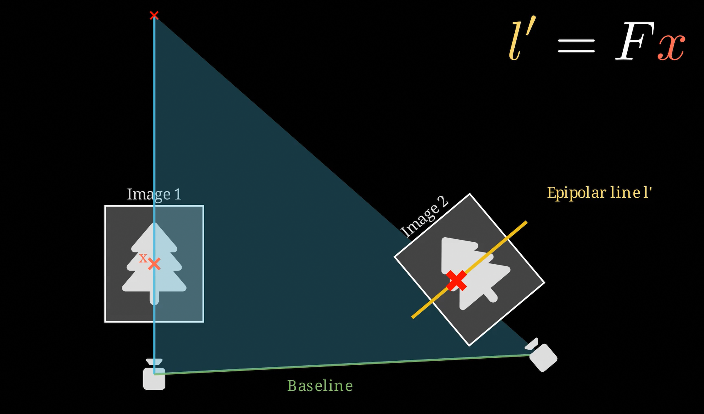
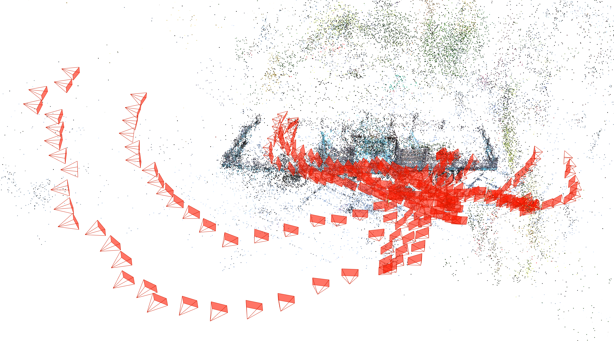

Synthèse d’Images par Rendu Inverse
CM2: Une structure de dimension 2+1
Et si au lieu de tordre les images… on reconstruisait le monde qui les a produites ?
Fil directeur : passer de image image (2D) à image structure (3D) pour synthétiser de nouvelles vues.
Plan du cours
- Pourquoi la 2D bloque : visibilité, profondeur, extrapolation
- Modèle de caméra : projeter 3D 2D (le minimum utile)
- Correspondances 2D–2D : géométrie épipolaire (contrainte)
- De la contrainte à la reconstruction : poses + points
- Triangulation à deux vues : reprojection, erreurs, ambiguïtés
- Transition : pourquoi “structure” ne suffit pas pour rendre réaliste (vers TP3)
👉 Objectif : comprendre ce qu’est la
photogrammétrie, ce que cela reconstruit vraiment et pourquoi c’est exactement ce qu’il faut pour la synthèse de vues.
Rappel (CM1) : la question de sortie
Qu’est-ce qui manque à la 2D pour gérer proprement la visibilité et les nouvelles vues ?
Réponse : profondeur + caméra + visibilité
on introduit une structure 3D et des poses caméra.
Fil directeur (2D → 3D → continu)

Et on essayera de faire chacun notre propre numérisation !
Ce que TP2 va vous faire faire
- prendre un jeu d’images d’une scène rigide
- estimer poses caméra
- reconstruire une structure (nuage de points)
- vérifier par reprojection
- analyser ce qui est ambigu / mal contraint
👉 CM2 = les concepts nécessaires pour comprendre les sorties de COLMAP (ou équivalent).
BLOC 1
Pourquoi passer au 3D ?
Limite structurelle de la 2D : visibilité
En 2D, on n’a pas d’ordre “devant/derrière”.
Conséquences :
- disocclusions (trous) quand on bouge le point de vue
- extrapolation instable
- artefacts de fusion quand des surfaces se croisent
👉 Le 3D apporte un mécanisme simple : la profondeur décider ce qui est visible.
Limite structurelle de la 2D : extrapolation
Interpolation entre vues proches : possible en 2D.
Mais dès qu’on s’éloigne :
- les correspondances deviennent ambiguës
- les erreurs s’amplifient
- on “invente” sans contrainte
👉 Le 3D donne une contrainte : un point 3D doit re-projeter correctement dans plusieurs images.
Qu’est-ce que la photogrammétrie ?
A partir de :

La photogrammétrie consiste à :
- estimer la géométrie 3D
- estimer les poses des caméras
- à partir d’un ensemble d’images 2D
Autrement dit :
reconstruire la scène 3D qui explique les images observées.
Elle transforme un problème d’images en problème géométrique.
A partir d’un ensemble d’images
On obtient
Ce que doit fournir le “rendu inverse 3D”
Pour pouvoir rendre de nouvelles vues, il faut au minimum :
- des caméras (poses + intrinsics)
- une structure (points 3D) associée aux images
Photogrammétrie = retrouver ce minimum à partir des images.
Respiration
BLOC 2
Au royaume des aveugles, les borgnes sont rois
Comment voit l’oeil de Sauron ?
Le modèle sténopé

Du grec ancien
- στενός, stenós (« étroit, resserré, court »)
- ὀπή, opḗ (« ouverture »)
Projection perspective : idée
Un point 3D (\(\color{#00ff88}{\mathbf{X}}\)) est vu comme un pixel (\(\color{#ffb000}{\mathbf{x}}\)) :
- la caméra “prend” ce qui est dans son repère
- puis projette sur le plan image
Mais pour cela il nous faudra :
- définir la pose de la caméra
- comprendre les paramètres extrinsèques (position + orientation)
- comprendre les paramètres intrinsèques (focale, centre principal, taille pixel)
- naviguer entre plusieurs repères spatiaux
- introduire la notion de coordonnées homogènes
Une caméra est une machine qui transforme un espace 3D en espace image 2D.
Décomposition utile : intrinsics vs pose
- Intrinsics (\(K\)) : focale, centre optique, pixel aspect…
- Extrinsics (\(R,t\)) : où est la caméra, où elle regarde
Schéma mental :
\[ \color{#ffb000}{\mathbf{x}} \sim K [R|t] \color{#00ff88}{\mathbf{X}} \]
👉 En photogrammétrie : on estime (\(\color{#fff}{R,t}\)) (et souvent aussi (\(\color{#fff}{K}\)).
Matrice intrinsèque
\[ K = \begin{pmatrix} \color{#00e0ff}{f_x} & \color{#ffb000}{s} & \color{#00ff88}{c_x} \\ 0 & \color{#00e0ff}{f_y} & \color{#00ff88}{c_y} \\ 0 & 0 & 1 \end{pmatrix} \]
Avec
- \(\color{#00e0ff}{f_x} = f \color{#b388ff}{\alpha_x}\) et \(\color{#00e0ff}{f_y} = f \color{#b388ff}{\alpha_y}\) : focales en pixels
- \(\color{#ffb000}{s}\) : facteur de skew
- \((\color{#00ff88}{c_x}, \color{#00ff88}{c_y})\) : centre optique (principal point)
- \(\color{#b388ff}{\alpha_x} = \frac{1}{\Delta x}\),
\(\color{#b388ff}{\alpha_y} = \frac{1}{\Delta y}\)
En pratique (caméras modernes)
\(\color{#00e0ff}{f_x} \approx \color{#00e0ff}{f_y}\) si les pixels sont carrés
\(\color{#ffb000}{s} \approx 0\) (axes orthogonaux)
Focal
\[ f_x = \frac{f} {\Delta_x}, \quad f_y = \frac{f}{\Delta_y} \]
Centre optique
OK
pour la matrice intrinsèque
Maintenant il ne nous manque plus que les paramètres extrinsèques
\(\color{#00e0ff}{R}\) & \(\color{#ffb000}{t}\)
Définition propre
Les extrinsèques sont :
\[ (\color{#00e0ff}{R}, \color{#ffb000}{t}) \]
où :
- \(\color{#00e0ff}{R}\) = matrice de rotation \(3×3\)
- \(\color{#ffb000}{t}\) = vecteur de translation \(3×1\)
Ils permettent de transformer un point du monde vers le repère caméra :
\[ \mathbf{X}_{\text{cam}} = \color{#00e0ff}{R} \mathbf{X}_{\text{world}} + \color{#ffb000}{t} \]
Attention
Attention
(\(\color{#00e0ff}{R}, \color{#ffb000}{t}\)) ne correspondent pas à la pose et à l’orientation de la caméra
On va essayer de comprendre pourquoi
C’est moi qui bouge ou c’est le monde ?
Dans les moteurs 3D (OpenGL, Unity, Unreal, etc.)
On applique une view matrix :
\[ \mathbf{X}_{\text{cam}} = \color{#00ff88}{V} \times \mathbf{X}_{\text{world}} \]
👉 On ne déplace pas la caméra
👉 On applique l’inverse de sa pose au monde
Parce qu’il est plus simple de transformer le monde par une matrice que de déplacer chaque objet individuellement.
\(\color{#00e0ff}{R}_{wc} = R_{\text{cam}}^{\top}\)
\(\color{#ffb000}{t} = -RC\)
FOV
Pourquoi les poses sont centrales (TP2)
Si on ne sait pas où sont les caméras :
- on ne peut pas trianguler des points
- on ne peut pas re-projeter / valider
- on ne peut pas synthétiser de nouvelles vues
👉 “image structure” = aussi “image caméras”.
Pourquoi a t-on introduit un modèle mathématique de la caméra ?
Parce que sans modèle caméra :
- une image est juste une matrice de pixels
- aucune relation géométrique exploitable n’existe
- impossible de parler de triangulation
- impossible de reconstruire
La 3D n’apparaît que si on suppose un mécanisme de projection.
Une caméra n’est pas un œil.
C’est une matrice.
\(K [R|t]\)
Pause
BLOC 3
On a modélisé les caméras.
OK
Mais où est la 3D ? 🤔
D’abord il nous faut définir des points d’intérêt
Puis faire des correspondances
Puis on triangule
Cool, pas compliqué finalement !
Sauf que …
En pratique on connait pas les poses des caméras 😔
Comment on fait ça du coup ?
Bein, faudrait trouver une matrice
qui permette de récupérer
- la rotation relative
- la translation relative
Donc une matrice qui encode ça.
La matrice essentielle \(E\)
Ok, bon… comment on calcule \(E\) du coup ?
\[ E = K'^T F K \]
\(K\) je connais
Mais wait …
c’est quoi \(F\) ?
La matrice Fondamentale
La matrice qui relie les points correspondants entre deux images d’une même scène.
Et c’est là que ça devient compliqué
Let me introduce …

La géométrie épipolaire
La géométrie épi-quoi ?
ἐπί (epi) sur, au-dessus, auprès de
πόλος (pólos) pivot, axe, pôle
La géométrie épipolaire décrit la contrainte géométrique
qui lie deux images d’une même scène.
Un point 3D, vu par deux caméras, définit un plan.
👉 On passe en géométrie de compas
Projection
Après ça

\[ x' \in l' \]
Le point correspondant doit être sur la ligne épipolaire
Après ça
\[ l' = Fx \]
Après ça
\[ x'^T F x = 0 \]
La géométrie épipolaire nous donne :
\[ \color{yellow}{l'} = F \color{red}{x} \]
Avec :
- \(\color{red}{x}\) : point dans image 1
- \(F\) : matrice fondamentale
- \(\color{yellow}{l'}\) : droite épipolaire dans image 2
Ce qui nous donne une contrainte épipolaire :
\[ \color{yellow}{x'}^T F \color{red}{x} = 0 \]
Après ça : comment estimer \(F\)
- On prend plusieurs correspondances \(\color{red}{x_i}\)\(\color{yellow}{x_i'}\)
- chaque correspondance donne une équation
- chaque correspondance donne une contrainte linéaire
- on estime \(F\)
Donc la suite est :
\[ \color{yellow}{x_i'}^T F \color{red}{x_i} = 0 \]
pour plusieurs points.
Puis :
- algorithme des 8 points
- SVD
Chaque correspondance donne une équation
\[ \color{yellow}{x_i'}^T F \color{red}{x_i} = 0 \]
On empile les équations pour plusieurs correspondances.
\[ Af=0 \]
avec
\(f\) = les 9 coefficients de \(F\)
SVD
\[ A=UΣV^T \]
La solution est le vecteur singulier associé à la plus petite valeur singulière.
On récupère ainsi :
\[ F \]
Et ensuite ?
On peut calculer :
\[ E = K′^T F K \]
puis récupérer :
- rotation
- translation
Et enfin
Triangulation des points 3D
Pour conclure
2 images correspondances géométrie 3D
Respiration
Conclusion
Pourquoi la structure ne suffit pas à rendre réaliste ?
Pour l’instant nous avons seulement
des points 3D triangulés
Si on applique tout cela…
À partir de plusieurs images on peut estimer :
- les poses des caméras
- des points 3D triangulés
Ce que l’on obtient c’est :
Une reconstruction éparse

Chaque point correspond à une correspondance triangulée.
Pour obtenir
Il nous reste quelques étapes supplémentaires
Autrement dit
Nous avons reconstruit :
- la structure
- la pose des caméras
mais pas encore une surface.
Mais un problème reste
Cette reconstruction est très… vide.
On n’a que :
- quelques points
- pas de surface
- pas de continuité
Ouverture : représentations pour synthèse de vues
À partir des mêmes données (poses + images)
Ce que nous pouvons facilement obtenir (CM3) :
- nuage de points (baseline)
- mesh
Ce que nous pouvons obtenir avec des méthodes plus récentes (CM4) :
- splats / surfels
- gaussiennes (Gaussian Splatting)
- champs continus (NeRF)
À retenir (CM2)
- Une image seule ne suffit pas : il faut plusieurs vues pour contraindre la géométrie.
- Une caméra est un modèle de projection : \(\mathbf{x} \sim K[R|t]\mathbf{X}\).
- Les correspondances entre images deviennent une contrainte géométrique (géométrie épipolaire).
- Avec les poses caméra, on peut trianguler des points 3D à partir de plusieurs vues.
- Le résultat est une reconstruction éparse : caméras + nuage de points.
Préparer CM3
Question de sortie :
Comment passer de cette structure éparse
à un modèle 3D complet ?
Réponse attendue :
la représentation (points) est trop discrète besoin de surfaces / splats / champs continus.
Comment on génère des points 3D à partir de 2 images ?
(vous avez 2h)